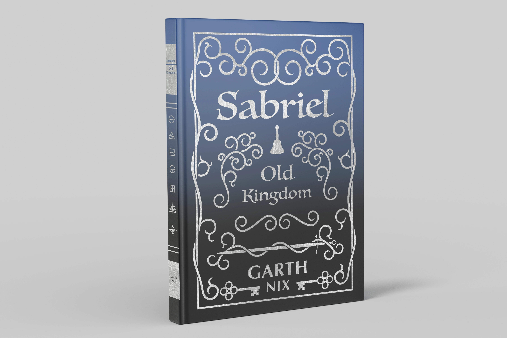
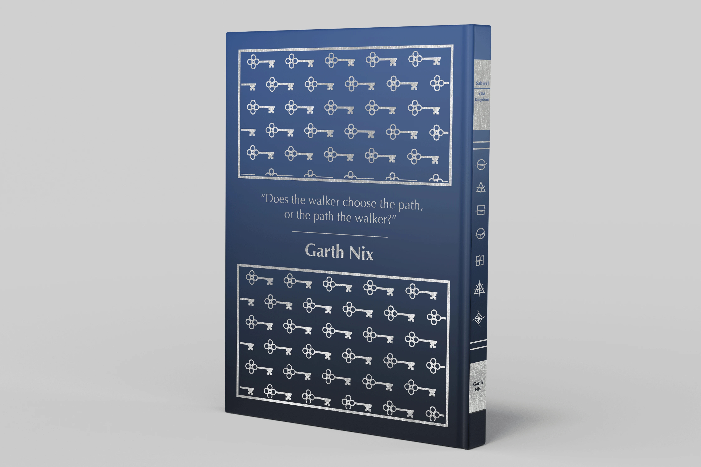

Book design / Sabriel by Garth Nix
Book Cover
A redesigned hardcover for Garth Nix’s Sabriel: a navy case with silver ornament, a bell motif on the front and a repeating pattern across the back.

Front cover
A bell inside a frame of silver filigreeHardcover · navy case · silver ornament
Sabriel is a story about bells, the dead and an old kingdom, and most of its covers lean on the heroine. This one leans on the objects instead: a single bell inside a frame of silver filigree on a deep navy case, the kind of book that looks like it has been on the shelf for a long time.
The title is set in a serif with hand-drawn flourishes, and the author’s name sits small at the foot so the ornament does the selling. The back carries a repeating pattern built from the same ornaments, with the blurb in a plain panel so it stays readable.
- 01
Front
Bell and filigree frame with the title and series name.
- 02
Back
Repeating ornament pattern with a plain blurb panel.
- 03
Spine
Title and author stacked to match the front.



Next project
Posters